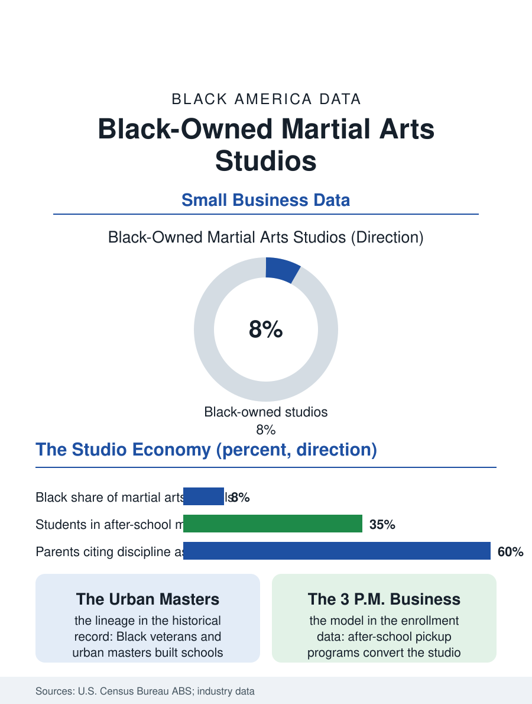

Black Business
The Discipline Economy: Black-Owned Martial Arts Studios
Black martial arts schools run a tuition annuity selling discipline and safety, rooted in a lineage of urban masters who built the authority themselves. The martial arts file.

The martial arts studio is a fixture of the Black commercial strip and the suburban plaza alike: karate, taekwondo, kung fu, jiu-jitsu, and boxing taught under a master's name, tuition by the month, belts by the season. Black-owned studios form a visible share of the industry, carried by a lineage of Black martial artists who built schools where the mainstream federations once barred them. This article reads the martial arts file.
The Lineage in the Window
The industry's demographics begin with its American history. The postwar martial arts boom arrived through servicemen returning from Asia, Black veterans among them in numbers the story often omits, and the urban schools of the 1960s and 1970s, in Harlem, Chicago, Los Angeles, and Washington, became community institutions of a specific kind: discipline academies for Black boys and girls in neighborhoods the policy files describe as under-resourced in everything except danger, run by masters whose authority derived from demonstrated mastery in a form that asked no one's permission. The names in the lineage are the community's own record, and its schools produced champions across the tournament circuits while the federations' politics, the style orthodoxies and the belt bureaucracies, were navigated like every other credentialing system in this atlas. The contemporary industry data show martial arts instruction as a mature small-business sector, thousands of schools, franchised brands at the top, tuition economics resembling the dance studio file's annuity, and Black-owned schools distributed across both the independent and franchise tiers, with the boxing and mixed martial arts segment adding a gym economy of its own whose Black trainer lineage runs from the great boxing gyms straight into the present.
The Tuition Annuity and the Belt Ladder
The business model's engine is retention mathematics: a student acquired at seven and retained to black belt is a decade of monthly tuition, so the school's craft is the pedagogy of staying, gradings as ceremonies, family classes that enroll the parents beside the children, and the after-school program with school pickup that converts the studio into childcare infrastructure, the segment in which many Black-owned schools in working neighborhoods anchor their enrollment base. The after-school model deserves its economic paragraph: it sells parents the supervised hours between school and work at a price below the childcare market, delivers discipline and homework time as the product, and fills the studio's dead afternoon hours with its most reliable revenue, a design whose community function and business function are the same function. The competition team's costs and glories mirror the dance circuit's, travel and fees against trophies that market the school. The risks are the service sector's standard set with a contact sport's additions: injury liability, instructor background diligence as a selling point to parents, and the retention cliff of the teenage years, when the student acquired at seven meets the full schedule of adolescence.
What the Studio Actually Sells
The file's closing analysis concerns the product, which the survey data on parents' motivations state without embarrassment: parents are buying discipline, confidence, and safety, in that order, with fitness and self-defense skills as the mechanism rather than the end, and the Black-owned studio sells the same product with an additional register the marketing does not need to name, a Black master as an authority figure whose standard the children rise to, inside a tradition that is visibly theirs. The women's self-defense and girls' enrollment segments have driven much of the industry's recent growth, and Black women masters, still fighting the federation file's demographics at the senior ranks, are among its most visible new school founders in the business formation data. The mixed martial arts economy has professionalized the fight end while the traditional schools hold the family end, and the Black gym lineage spans both. The martial arts file closes at the evening class's bow, the day's last ceremony in a room that smells of canvas and effort, where a business model of monthly tuition delivers, as its unlisted product, one of the oldest technologies in this atlas: a disciplined elder, a room of children watching themselves improve at something hard, and a neighborhood institution that pays its own rent. The belt ladder and the balance sheet, in the schools that last, are the same document.
More in Black Business
Black-Owned Businesses: Counts, Receipts, and the Representation Gap
About 161,000 Black-owned employer firms and three million solo ventures: how the Census Bureau counts Black business ownership, where firms concentrate, and the gap between population share and business share.
Black Median Net Worth: The Wealth Gap in Federal Reserve Data
The Federal Reserve puts Black median family net worth at $44,900, against $285,000 for White families — about 16 cents on the dollar. The widest gap in economic data.
Black Buying Power: The $1.8 Trillion Consumer Economy
Black buying power is estimated at about $1.8 trillion — larger than the economy of most nations. What the figure measures, who produces it, and what it buys.
Source: U.S. Census Bureau, Annual Business Survey (NAICS 61162); martial arts industry association data.